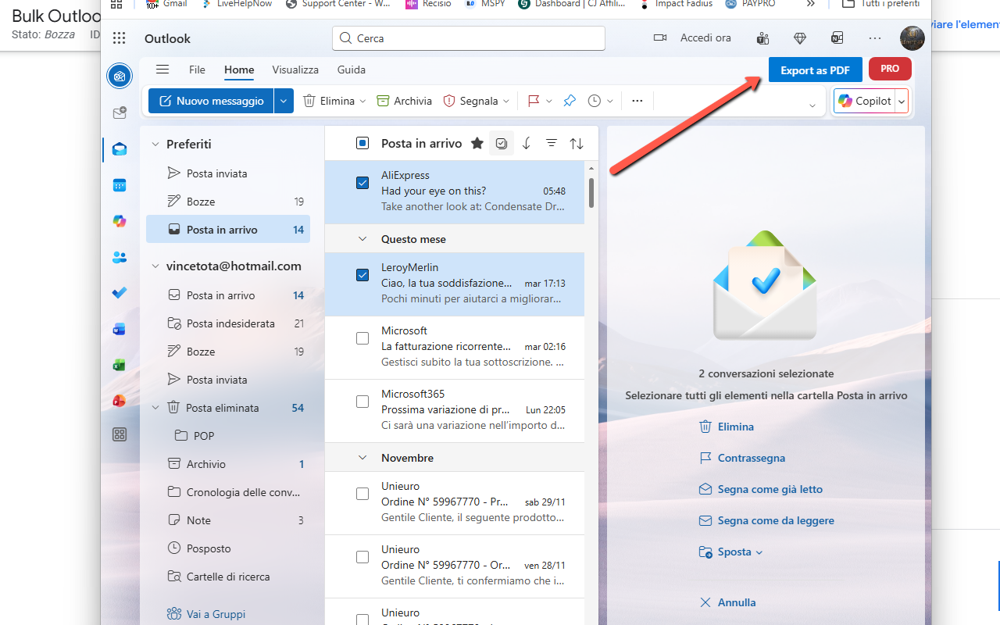

Bulk Outlook Email to PDF Exporter
Imagine archiving hundreds of Outlook emails as professional PDF documents with just a few clicks 📧. With Bulk Outlook Email to PDF Exporter, that power is at your fingertips. This intelligent Chrome extension automates the tedious task of converting your Outlook.com emails into high-quality, searchable PDF files. Whether you're archiving important correspondence, creating legal records, backing up business communications, or organizing personal emails, this extension transforms hours of manual work into minutes of automated efficiency.
No more printing to PDF one email at a time or losing formatting in the process. The extension allows you to select multiple emails from your inbox, and it automatically opens each one, captures the complete content including images and formatting, and generates a professional multi-page PDF document. With intelligent screenshot stitching technology, even long email threads are captured perfectly across multiple pages. Everything happens through a sleek interface integrated directly into Outlook's toolbar, with real-time progress tracking.
One of the standout features is the intelligent content capture 📊. The extension uses advanced screenshot technology combined with smart cropping to capture only the email content—no sidebars, no menus, just the pure email conversation. Each PDF includes the email subject as a header on the first page, making your archives instantly searchable and organized. Long email threads are automatically scrolled and stitched together seamlessly, ensuring nothing is missed. Images, formatting, fonts, and layout are all preserved perfectly, just as they appear in Outlook.
Managing bulk exports is effortless. Select as many emails as you want from your inbox using checkboxes, click the "Export as PDF" button, and let the extension do the work. It opens each email sequentially, captures the content with intelligent scroll detection, generates a multi-page A4 PDF, and saves it with a filename based on the email subject. The extension respects Chrome's screenshot rate limits by automatically pacing the captures, ensuring reliable exports even for hundreds of emails. Your export settings are remembered between sessions, making repeat exports quick and easy.
📖 How to Use
- Install the extension from the Chrome Web Store
- Navigate to outlook.live.com or outlook.office.com and sign in to your account.
- The "Export as PDF" button will appear in the top toolbar automatically.
- To export a single email: Open any email and click "Export as PDF".
- To export multiple emails: Select emails using checkboxes in your inbox, then click "Export as PDF".
- Confirm the export and watch the real-time progress indicator.
- Your PDFs will be automatically downloaded to your default downloads folder.
- For watermark-free exports, click the PRO badge to unlock with your license code.
📷 Screenshots


✅ Features
- 📧 Export single or multiple Outlook emails to PDF
- 📄 Multi-page A4 format with professional layout
- 🎯 Subject line automatically added as header on first page
- 🖼️ Perfect image capture - all images preserved in original quality
- 📏 Intelligent scroll and stitch for long email threads
- ✂️ Smart cropping - captures only email content, no sidebars or menus
- ⚡ Automatic rate limiting to prevent Chrome screenshot quota errors
- 🎨 Preserves all formatting, fonts, colors, and layout
- 📁 Automatic filename generation from email subject
- 🔄 Sequential processing for reliable bulk exports
- 💾 Persistent URL-based email selection (works even after scrolling)
- 📊 Real-time progress tracking with detailed logs
- 🎨 Seamless integration into Outlook's native interface
- 🆓 Free version: Demo watermark on exported PDFs
- 💎 PRO version: Remove watermark with unlock code
- 🌐 Works with outlook.live.com and outlook.office.com
🎯 Perfect For
- Legal Professionals: Archive email evidence and correspondence with timestamps preserved
- Business Users: Create permanent records of contracts, agreements, and communications
- Accountants: Export financial correspondence and transaction confirmations
- HR Departments: Document employee communications and formal correspondence
- Researchers: Archive email interviews and professional exchanges
- Personal Use: Back up important family emails, receipts, and memories
- Customer Support: Export support ticket conversations for records
- Project Managers: Archive project-related email threads
🔧 Technical Highlights
- Screenshot Technology: Native Chrome API for pixel-perfect captures
- Smart Cropping: Automatic detection and extraction of email content area
- Scroll Stitching: Captures multiple viewport frames and combines seamlessly
- Rate Limiting: 600ms delay between captures to respect Chrome quotas
- URL Persistence: Stores email URLs, not DOM elements (scroll-safe)
- A4 PDF Generation: Standard A4 format with 10mm margins
- JPEG Compression: High quality (98%) for optimal file size
- Device Pixel Ratio: Automatic DPI detection for high-resolution displays
🔒 Privacy & Security
Your privacy is paramount. Bulk Outlook Email to PDF Exporter processes everything locally in your browser—no emails are sent to external servers. There's no tracking, no analytics, and no user accounts required. The extension only accesses Outlook pages and only when you explicitly click the export button. All PDF generation happens client-side using JavaScript libraries loaded from the extension itself. Your emails stay private, secure, and completely under your control.
💎 PRO Version
The free version includes a "DEMO WATERMARK" on exported PDFs. Upgrade to PRO to remove the watermark and get clean, professional PDF exports:
- ✅ Watermark-free PDF exports
- ✅ One-time purchase with permanent license
- ✅ Instant activation with unlock code
- ✅ All features included
Click the red "PRO" badge in Outlook to purchase and unlock. Your license is stored locally and persists across browser sessions.
With Bulk Outlook Email to PDF Exporter, email archiving becomes simple, fast, and professional. Whether you're exporting one email or one hundred, whether you need legal documentation or personal backups, this extension gives you enterprise-grade PDF export capabilities wrapped in an intuitive one-click interface. No complicated setup, no monthly subscriptions—just install, click, and export. 🚀
View on Chrome Web Store →